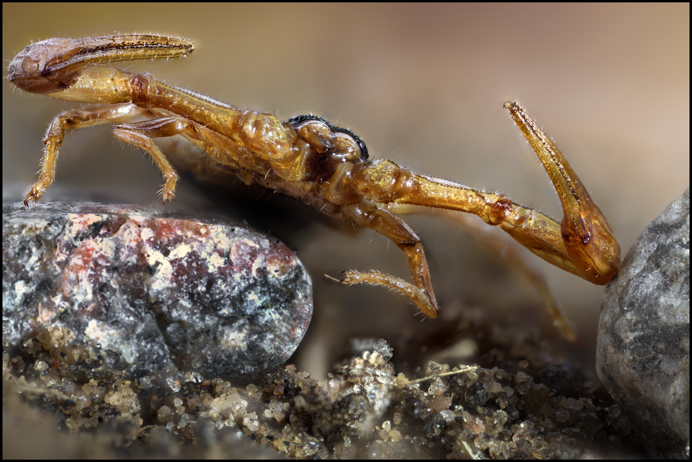
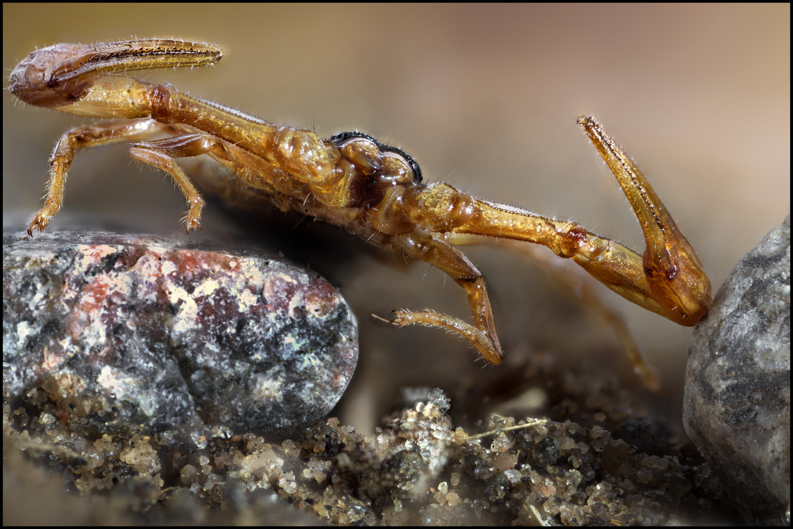

Rivers

Main Fork of the Salmon River, Idaho
Nestled deep in the Frank Church Wilderness of No Return winds the Salmon river. The Salmon was given the nickname long ago as the River of No Return by the people living near it because of the number of folks that came to visit and fell so in love with the rugged beauty of the river that they never left.
Herds of elk and deer graze on the hillsides around the river and bear and bighorn sheep are also commonly sighted. The river corridor is also lined with awe inspiring ponderosa pine which tower over the sandy beaches in the campsites and provide shelter from sun or rain when needed.
Let's not forget the rapids! They range from class I-IV. The Salmon is one of the longest undammed rivers in the United States. As a free flowing river the water is higher, faster, and colder in the early summer and lower, slower, and warmer in the late summer. There are good rapids all summer...but families with children who like to swim tend to appreciate the late summer's slower, warmer water more.

Desolation and Gray Canyon, Utah
Winding through canyons in central Utah, in some of the most desolate land anywhere, the Green river flows towards the mighty Colorado river and the sea. High grey stone cliffs, beautiful desert scenery, and great rapids have made this run famous. This 84-mile trip runs from from Sand Wash to Swaseys Rapid (just outside Green River Utah) and boasts outstanding scenery, interesting geologic formations, evidence of prehistoric and historic human activity, and great whitewater opportunities.
Desolation is rated a Class II/III and is usually done in 6 days
Desolation Canyon has been recognized as a National Landmark. This designation is based on the uniqueness and rich history that the canyon tells.

Grand Canyon, Arizona
This is the grand daddy of all canyons and the grand daddy of all river trips. You will never forget your visit to the Grand Canyon.
Grand Canyon river rafting combines world-class whitewater with breathtaking scenery to make one truly unforgettable river experience. The canyon is filled not only with exhilarating whitewater rapids, but with side canyons and ancient indian ruins accessible only by river.
CLASS I - X: The Grand Canyon uses a unique river rating scale. The rapids in the Canyon are technically rated I - X ( 1 - 10) to accommodate such a wide variety of rapids and river variances. However, most people are familiar with the regular I - V river rating scale, so we often refer to both.
Highlights from the past season
What an incredible season we have had. We celebrated our 50th year of running trips down the Grand Canyon. This year we ran 36 trips down the Grand Canyon introducing over 800 people to one of our favorite places on earth. We trained 4 new guides and welcomed them to our family. The season started off with some chilly weather in the early season, but our guests braved the cold and loved every minute of their trip (show pictures). Later the temperatures soared reaching highs of 120 F in the Grand canyon and 95 on the Salmon. We didn't have any trouble getting people in the water at those temperatures.
Encounters in the wild!
 

Scorpions: There are hundreds of varieties of scorpions, most of them being harmless. There are, however, a handful of them that can be dangerous and even potentially lethal. Scorpions can be found in almost every ecosystem and are very adaptable to their environment. The scorpion that calls Phantom Ranch in the Grand Canyon home is the Bark Scorpion, the most venomous in the United States. Do not worry though, the bark scorpions are only lethal to their prey and luckily humans are not on that list!
They spend the day hiding and crawl out at night to hunt. They will eat crickets, moths, spiders and other insects. Many compare their sting to an intense bee sting. Relief can be found with ice, aspirin and time.
When in the canyon, pay attention to where you are walking at night. Always wear your shoes or sandals. Always have a light with you to see where you are going. Never try to capture a scorpion and if you get stung, see your guide immediately.
Big horn sheep: For many people, bighorn sheep symbolize the rugged mountain west. It is one of two species of wild sheep in North America. It’s compact body is muscular with chocolate brown fur. Most weigh 160-250 lbs. They have exceptional vision, hearing and smell that helps them detect and avoid predators.
Their large curved horns can weigh up to 30 lbs. Females also have horns but they are short with a slight curvature. Horns are used as tools for eating and fighting.
If you encounter a big horn sheep, don’t agitate it. The park service asks that you stay 100 feet away from big game animals. Leave them enough room for escape if they feel threatened.